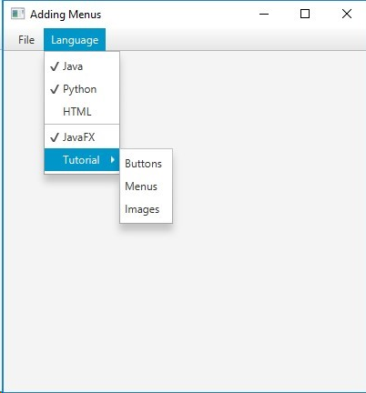

/*
* To change this license header, choose License Headers in Project Properties.
* To change this template file, choose Tools | Templates
* and open the template in the editor.
*/
package menus;
import javafx.application.Application;
import javafx.application.Platform;
import javafx.event.ActionEvent;
import javafx.event.EventHandler;
import javafx.geometry.Insets;
import javafx.geometry.Pos;
import javafx.scene.Scene;
import javafx.scene.control.Button;
import javafx.scene.control.CheckMenuItem;
import javafx.scene.control.Label;
import javafx.scene.control.Menu;
import javafx.scene.control.MenuBar;
import javafx.scene.control.MenuItem;
import javafx.scene.control.RadioMenuItem;
import javafx.scene.control.SeparatorMenuItem;
import javafx.scene.control.ToggleGroup;
import javafx.scene.image.Image;
import javafx.scene.image.ImageView;
import javafx.scene.layout.BorderPane;
import javafx.scene.layout.StackPane;
import javafx.scene.layout.VBox;
import javafx.scene.paint.Color;
import javafx.scene.text.Text;
import javafx.stage.Stage;
/**
*
* @author Peggy Fisher
*/
public class Menus extends Application {
@Override
public void start(Stage primaryStage) {
BorderPane root = new BorderPane();
Scene scene = new Scene(root, 400, 400, Color.WHITE);
MenuBar menuBar = new MenuBar();
menuBar.prefWidthProperty().bind(primaryStage.widthProperty());
root.setTop(menuBar);
// File menu - new, save, print, and exit
Menu fileMenu = new Menu("File");
MenuItem newMenuItem = new MenuItem("New");
MenuItem saveMenuItem = new MenuItem("Save");
MenuItem printMenuItem = new MenuItem("Print");
MenuItem exitMenuItem = new MenuItem("Exit");
//add the new menuitems to the fileMenu
fileMenu.getItems().addAll(newMenuItem, saveMenuItem,printMenuItem,
new SeparatorMenuItem(), exitMenuItem);
Menu languageMenu = new Menu("Language");
CheckMenuItem javaMenuItem = new CheckMenuItem("Java");
CheckMenuItem pythonMenuItem = new CheckMenuItem("Python");
CheckMenuItem htmlMenuItem = new CheckMenuItem("HTML");
languageMenu.getItems().addAll(javaMenuItem, pythonMenuItem, htmlMenuItem);
CheckMenuItem FXMenuItem = new CheckMenuItem("JavaFX");
FXMenuItem.setSelected(true);
languageMenu.getItems().addAll(new SeparatorMenuItem(),FXMenuItem);
Menu tutorialMenu = new Menu("Tutorial");
tutorialMenu.getItems().addAll(
new MenuItem("Buttons"),
new MenuItem("Menus"),
new MenuItem("Images"));
languageMenu.getItems().add(tutorialMenu);
exitMenuItem.setOnAction(actionEvent->Platform.exit());
menuBar.getMenus().addAll(fileMenu, languageMenu);
primaryStage.setTitle("Adding Menus");
primaryStage.setScene(scene);
primaryStage.show();
}
/**
* @param args the command line arguments
*/
public static void main(String[] args) {
launch(args);
}
}